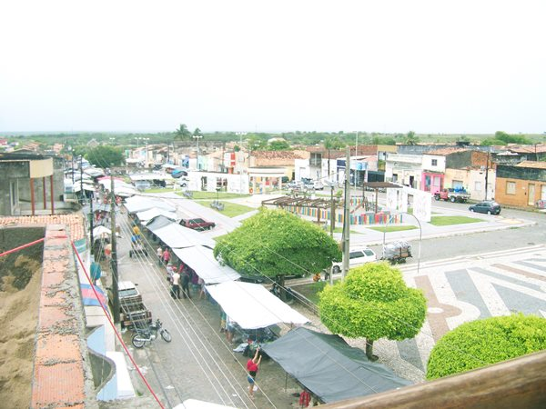

Monte Alegre de Sergipe
História
As terras que hoje abrangem Monte Alegre de Sergipe, a 145 quilômetros de Aracaju, pertenciam a Porto da Folha, município colonizado por Tomás Bermudes. Diz a tradição que o primeiro núcleo populacional que deu origem ao povoado foi fundado no final do século XIX, em uma fazenda localizada às margens da estrada que liga Nossa Senhora da Glória a Porto da Folha.
A história de Monte Alegre de Sergipe, como de todo Alto Sertão Sergipano, está atrelada à criação de gado bovino, de forma que no passado, no período colonial, muitos entradistas desbravaram o sertão sergipano através do Rio São Francisco em busca de riquezas minerais. E assim se estabeleceram e, graças às doações de sesmaria recebidas, trouxeram o gado, tornando-se grandes latifundiários. Essas propriedades eram sempre administradas por vaqueiros e sua remuneração era através da quarteação, isto é, um quarto dos bezerros e potros que nasciam. O sertão, onde o clima semiárido é típico, sempre foi vítima de secas prolongadas, o que, adicionado à ausência do Estado, levou os sertanejos a se aventurarem em diversas regiões do país, principalmente para os centros urbanos em busca de trabalho e melhores condições de vida. Esse deslocamento em massa, chamado de êxodo rural, foi motivado também pela concentração de terras, mecanização no campo e industrialização do Sudeste, o que atraiu muitos nordestinos, sobretudo para a cidade de São Paulo . Essa região dos “currais”, como denomina o autor, também foi alvo do cangaço, grupo de cangaceiros armados por vezes liderados por Virgulino Ferreira da Silva, vulgo Lampião (morto em 28 de julho de 1938, em Poço Redondo, município vizinho) que assustavam os moradores da região. Esse foi um fator que chegou a despovoar muitas localidades.
Mas foi no final do século XIX, segundo a tradição, que originou o primeiro núcleo populacional, às margens de uma estrada carroçável que ligava os municípios de Pão de Açúcar, Porto da Folha e Nossa Senhora da Glória, este último do qual o pequeno povoado veio fazer parte a partir de 1932. E foi assim que muitas pessoas chegaram e se fixaram na região. A cidade, por ter sido formada em uma área de encontro de viajantes de várias regiões, é constituída de forma heterogênea, mas principalmente por pessoas dos municípios de Porto da Folha, Aquidabã e Carira e outros baianos e mais recentemente por pernambucanos, de acordo com populares e conhecedores da história. Esse ponto de encontro era realizado embaixo de uma grande árvore frondosa, numa encruzilhada, segundo o professor Eloy, nas proximidades da atual Praça Deputado Passos Porto, ao lado da casa de José Inácio de Farias, fundador da cidade, proprietário das terras que atualmente comportam a sede municipal, no qual foi realizada a primeira feira livre de Monte Alegre. Em 29 de Janeiro de 1929 foi abatido um carneiro, um porco e um boi. E assim, durante todos os domingos a feira foi realizada, com a comercialização de carnes e outros itens agrícolas e por meio da troca de queijo – produto típico da região – por tecido. Essa prática era bastante corriqueira, uma vez que muitas pessoas da época viviam do escambo de produtos. O tecido era procedente de Porto da Folha e era trazido no “lombo” dos burros. E o queijo era trazido da Lagoa dos Bichos e de Monte Alegre Velho.
Outro produto da época, presente na culinária nos dias de hoje, mas que não tinha valor de troca era o requeijão de fazenda ou requeijão do sertão. As pessoas que faziam eram aquelas mais abastadas onde conseguiam obter uma quantidade de leite considerável para produzi-lo e ele era usado como presente que os afilhados davam aos padrinhos de batismo na Semana Santa. Na agricultura da época, o solo era cultivado para plantar milho, feijão, mandioca e algodão entre outros, estes dois primeiros ainda presentes atualmente. Nessa época existiam poucas casas, no entanto já havia certo arruamento. A primeira construção religiosa foi erguida em frente ao que hoje é a prefeitura.
A existência desses produtos - o queijo e o requeijão do sertão - demonstra a típica presença do gado trazido pelos colonizadores e desbravadores que foi se distanciando do litoral devido ao plantio da cana-de-açúcar, no período colonial, de acordo com Andrade (2005) e fortalece a ideia de que a toponímia do município está relacionada à influência de grandes proprietários de terra e criadores de gado bovino, margeando os afluentes do Rio São Francisco. Seu nome foi inspirado numa fazenda de Antônio Machado Cabelê, que se chamava Monte Alegre. Ele se reuniu com outros fazendeiros e decidiram nomear a nova povoação de Monte Alegre, porque no local existia um pequeno monte considerado bonito e alegre. A partir daí sua fazenda passou a ser conhecida como Monte Alegre Velho.
Algo de grande importância em que, ao falar da história da cidade, os mais velhos sempre se recordam com lembranças dos tempos em que eram jovens, era o famoso “Tanque Velho” que segundo eles havia sido construído por alguns fazendeiros donos de terras em uma área comum no intuito de abastecer a população local bem como ser utilizado para o gado nas épocas em que as chuvas eram escassas. As crianças brincavam e se divertiam enquanto as mulheres lavavam roupas. Com o crescimento da cidade o açude foi intensamente degradado e hoje encontra-se aterrado servindo de terrenos para a construção de casas.
Através de alguns registros conta-se que o primeiro habitante da região foi o baiano de Jeremoabo, Januário da Costa Farias, que fugira do seu município por ser discípulo de Antônio Conselheiro e está sendo jurado de morte. O seu filho, José Inácio de Farias, é tido como fundador do município. Ele foi responsável por doar terras para a construção de casas onde atualmente situa-se a cidade.
Monte Alegre fez parte do município de Porto da Folha até 1932, quando então passou a pertencer a Nossa Senhora da Glória. Em 1940, era um pequeno povoado, com menos de 80 casas. Em 25 de novembro de 1953, com o discurso de incrementar o progresso de algumas regiões, a Lei estadual nº 525-A criou mais 19 municípios, entre os quais estava incluído Monte Alegre de Sergipe. A partir daí o povoado foi elevado à categoria de cidade. O município foi solenemente instalado no dia 31 de janeiro de 1955, quando foi empossado o primeiro prefeito, Antônio José de Santana, e constituída, também, sua primeira Câmara Municipal, composta por cinco vereadores.
Com a morte de sua filha, José Inácio decidiu enterrar o corpo em frente à sua casa, onde construiu uma capela para fazer orações. E neste mesmo local foi enterrado seu filho bem como seu próprio corpo e o de sua esposa aonde ainda hoje se encontra, entre o altar e a sacristia da atual igreja católica. Essa capela foi construída no sentido norte. Muitos anos depois, com a cidade emancipada, na administração do prefeito Edmilson Canuto Pereira, quarto prefeito do município, por intermédio do Padre Leon Gregório, foi construída no mesmo local, sobre as ruínas da antiga capela, uma igreja. Esta, porém, maior, devido à necessidade de comportar um maior número de pessoas.
fonte: https://pt.wikipedia.org/wiki/Monte_Alegre_de_SergipeDados Gerais de acordo com o IBGE
| Prefeito (a) | Marinez Silva Pereira Lino |
| Vice-Prefeito (a) | Luiz Antonio Gomes Santos |
| Site do município | https://montealegredesergipe.se.gov.br/ |
| Área territorial | 386,912 km² |
| População estimada | 15.315 pessoas |
| Densidade demográfica | 33,45 hab/km² |
| IDHM | 0,553 |
| PIB per capita | R$ 10.542,43 |